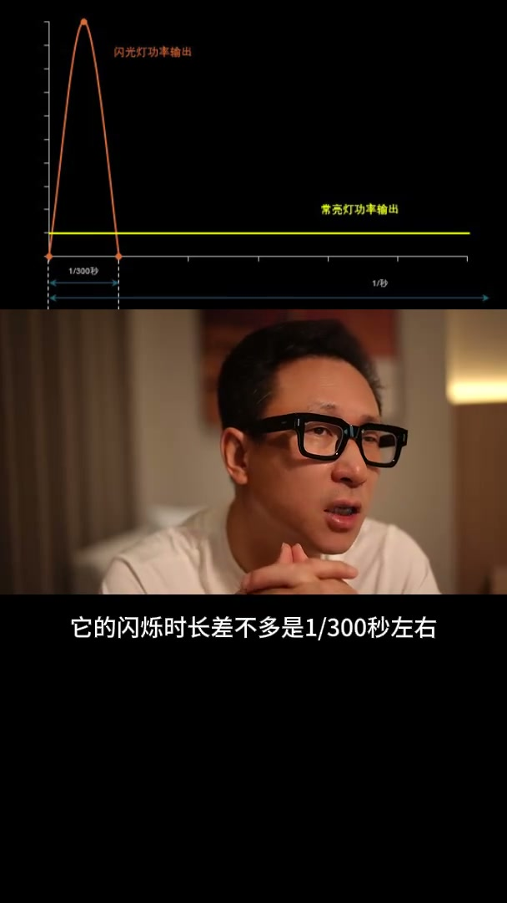
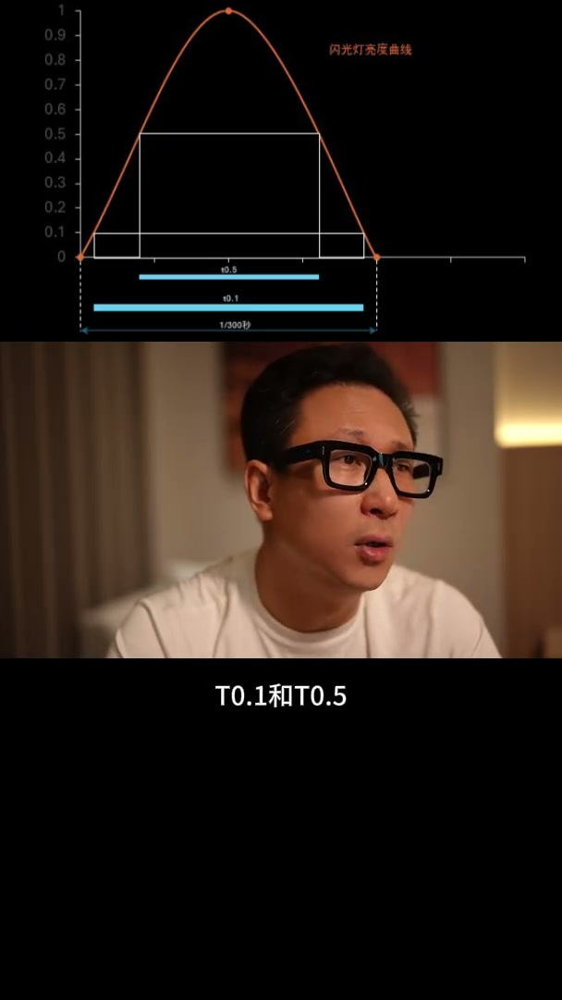

内容要点
这段视频围绕「同瓦数的闪光灯和常亮灯的亮度之比」展开，按时间介绍其中的关键环节。同瓦数的闪光灯和闪亮灯的亮度之笔。
开场引入
同瓦数的闪光灯和闪亮灯的亮度之笔。这是一个很有意思的问题。如果你去网上查或者问一些老师。你得到的答案可能会是。这是两个不同的概念。他们无法放在一起去比较。但现实中我们又经常面对选择闪光灯还是常亮灯。而且标注的参数都是瓦。甚至还有不少摄影师认为同瓦数的闪光灯和闪亮灯是相同的。这显然不符合我们的日常经验
[00:00] 开场引入相关画面。
Opening introduction footage.
核心内容
长亮灯实实在在就是在1秒内平均释放。但闪光灯就不同了在实际上闪光灯单持的能量释放。并不是在1秒内完成的而是远远小于1秒。常规旗舰级的机灵闪在全光输出下。它的闪烁时长差不多是300分之1秒左右。也就是说其实它在300分之1秒以内就已经输出了76.2的能量。而长亮灯是在1秒内均匀的输出了76.2的能量。说到这儿你可能就明白了。在这300分之1秒时间之内闪光灯的亮度是长亮灯的300倍。也就是说这时候闪光灯的功率相当于76瓦乘上300

[00:55] 核心内容相关画面。
Core-content footage.
操作演示
相当于2万多瓦的长亮灯的亮度。这这个理论的值实际在各种原因下有些偏差。但不妨碍我们去理解这里的底层逻辑。之前我的视频有提到过。我们平常用的基金闪如果换成长亮灯。大概相当于1万瓦以上。很多人还不太相信。闪光灯闪烁时间是个波星图。这里面又涉及到两个很重要的参数。T0.1和T0.5

[01:43] 操作演示相关画面。
Operational demonstration footage.
总结
相当于2万多瓦的长亮灯的亮度。